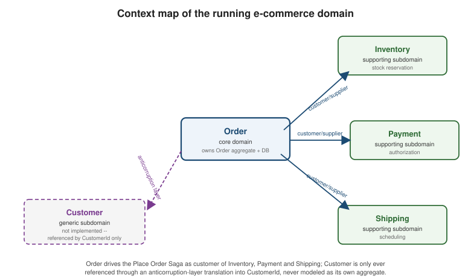

Strategic Design for Microservices
|
This content was generated with the assistance of AI and should be verified against the official documentation before being relied on in production. |
Every other page in this section assumes a microservice boundary has already been drawn somewhere sensible.
Strategic design is the part of domain-driven design that decides where: it names the sub-problems a large
domain decomposes into, gives each one a model boundary that owns its own language and its own data, and
describes how those boundaries talk to each other once they can no longer share an in-process object reference.
Everything downstream — the tactical building blocks in
Entities, the "one aggregate, one transaction" rule in
Aggregates, and the whole reason
Sagas and
Domain Events exist — follows from a strategic decision made
here: a microservice is sized to a bounded context, and a bounded context owns its own database. The running
example used throughout this section, and reused verbatim by every later page, is an e-commerce order flow with
four bounded contexts — Order, Inventory, Payment, Shipping — plus a Customer context that
this section deliberately treats as generic and never implements, referenced only by its CustomerId.
Domains, subdomains, and the ubiquitous language
The domain is the whole problem an organization is in business to solve — for the running example, "sell products online, from checkout through fulfillment." No single model, and no single team, can own that whole problem coherently; DDD’s answer is to split it into subdomains, each a narrower slice of the problem space that can plausibly be modeled by one team speaking one consistent vocabulary. Not every subdomain deserves the same investment, and DDD names three kinds so the investment matches the value:
-
Core domain — the part of the business that is actually the competitive differentiator, worth the most design and engineering effort. For the running example this is order placement and fulfillment orchestration: the sequencing of reservation, payment and shipping that turns a cart into a delivered package is the thing the business is built around.
-
Supporting subdomain — necessary to the business, specific enough to it that an off-the-shelf product will not fit well, but not itself a differentiator. Inventory tracking and shipment scheduling are supporting subdomains here: they need custom modeling for this business’s specific rules, but nobody chooses this company over a competitor because of how it schedules shipments.
-
Generic subdomain — a problem every business like this one has, already solved well by existing products or libraries, not worth custom modeling. Customer identity and profile management is treated as generic in the running example — worth buying or reusing (an identity provider, a CRM), not worth building a bespoke aggregate for — which is exactly why the running example only ever references a
CustomerIdand never models aCustomeraggregate of its own.
Inside a subdomain’s boundary, a team agrees on a ubiquitous language: the vocabulary the model, the code, and
the conversation with domain experts all share without translation. "Reserve," "authorize," "schedule," and
"approve" mean exactly one precise thing each inside the Order context because the team decided so and the code
says so — Order.place(PlaceOrderCommand), OrderStatus.APPROVAL_PENDING, ReserveInventoryCommand. The same
word can mean something different in a different subdomain (a "reservation" in Inventory is a stock hold; a
"reservation" in Shipping might mean a courier slot) without that being a bug, precisely because each subdomain’s
language only has to be consistent inside its own boundary, not across all of them.
The bounded context: a model boundary, and a database boundary
A subdomain describes the problem space; a bounded context is the solution-space boundary drawn around a model that implements (all or part of) a subdomain — the region within which a term in the ubiquitous language has exactly one meaning, one set of types, and one implementation. In a well-factored decomposition the two line up one-to-one — the Order bounded context implements the order-placement core subdomain — but they are not the same thing by definition: a legacy system might implement two subdomains inside one context because nobody has split it yet, or one subdomain might eventually be served by two contexts during a migration.
What makes the bounded context the right unit for a microservice specifically is a second boundary that comes
bundled with it almost for free: because a bounded context owns its own model, and nothing outside the context is
allowed to reach into that model’s internals, the context is also the natural owner of its own database.
This is the bridge from strategic DDD to the "database per service" pattern that everything about consistency in
this section eventually reduces to — each of Order, Inventory, Payment and Shipping in the running example gets
its own schema, queried and written only by that context’s own code, with no other context allowed to run SQL
against it directly. Choosing the Right Database covers the
storage-selection consequences of that split (polyglot persistence, CDC pipelines feeding read models across
those boundaries); this section is about the modeling reason the split exists in the first place. Once each
context has its own database, a single ACID transaction across two contexts is no longer physically available — the entire reason Why Not Distributed
Transactions and Sagas exist as their own pages is that this
strategic choice, not any purely technical limitation, is what forces eventual consistency between contexts.
Decomposition by subdomain vs. by business capability
Given a domain, there are two common lenses for drawing bounded-context boundaries, and they often — but not always — agree:
-
Decomposition by subdomain starts from the problem space: talk to domain experts, run an event-storming session (Event Storming covers the workshop itself), and let the natural seams between core, supporting and generic subdomains become the context boundaries. This is the DDD-native lens and the one the running example follows — Order, Inventory, Payment and Shipping are subdomains first, services second.
-
Decomposition by business capability starts from the organization instead: what does the business do, independent of how it is currently structured or staffed — "manage inventory," "process payments," "arrange shipping" — and each capability becomes a candidate service. In practice this produces very similar boundaries to subdomain decomposition, because a business capability and the subdomain that implements it are usually two names for the same seam; the difference is where the exercise starts (an org/capability inventory vs. a domain-modeling workshop), not where it ends up. Richardson’s Microservices Patterns ch. 2 presents both as equally valid starting points precisely because they tend to converge — use whichever one the team and the available domain experts make easier to run.
Either lens can produce a boundary that turns out to be wrong — too coarse (two subdomains stuck in one context, coupling their release cycles and their data unnecessarily) or too fine (one subdomain sliced across several contexts, forcing chatty cross-context calls for what should be one local operation). Both are corrected the same way: watch which pieces of the ubiquitous language keep needing qualification ("do we mean a reservation as Inventory sees it, or as Shipping sees it?") and which pieces of code from two different contexts change together on every feature, then move the boundary to match.
The context map and its relationship patterns
Bounded contexts do not exist in isolation — every real system has contexts that depend on each other, and a context map is simply the diagram (and the accompanying decision record) of which contexts relate to which, and how. Eric Evans' original DDD vocabulary names a fixed set of relationship patterns; each one is a short, specific answer to "how do these two teams and these two models stay coordinated (or deliberately don’t)."
| Pattern | Definition | What changes across a network boundary |
|---|---|---|
Partnership |
Two teams' contexts succeed or fail together, so they coordinate planning and integration as equals, with no formal contract enforced by either side. |
Barely changes in kind — coordination was always social, not technical — but a network call adds latency and partial-failure modes an in-process call never had, which the partnership’s informal coordination now also has to plan around. |
Shared kernel |
Two contexts deliberately share a small, explicitly agreed subset of their model (and often its code), changed only by joint agreement. |
Changes the most: sharing a kernel across a network boundary usually means sharing a library/schema, not sharing live objects, so the "shared" part has to be versioned and deployed independently on each side — something an in-process shared kernel never had to think about. |
Customer-supplier |
The downstream context (customer) depends on the upstream context (supplier), and the supplier team plans its own roadmap with the downstream team’s needs as an input, though the supplier still leads. |
The dependency direction and planning relationship are unchanged; what is new is that "supplier changed its contract" now surfaces as a runtime integration failure (a REST response shape, an event schema) instead of a compile error, so the contract has to be made explicit and versioned rather than merely a matter of a shared codebase compiling. |
Conformist |
The downstream context simply conforms to the upstream model as given, with no leverage to negotiate changes and no translation layer to shield itself. |
Barely changes — conforming to an upstream API contract over the network looks almost identical to conforming to an upstream library’s types in-process; the cost of not translating is the same either way, only the transport differs. |
Anticorruption layer (ACL) |
The downstream context isolates itself from an upstream model it does not control (and may not even want to model faithfully) behind a translation layer that converts the upstream shape into the downstream’s own, purpose-built types. |
Becomes far more valuable: over a network boundary, the upstream’s DTO shape, versioning cadence, and error modes are all completely outside the downstream’s control, so the translation layer is doing real, load-bearing work (see the code example below) rather than merely tidying up an already-shared in-process type. |
Open host service / published language |
The upstream context defines a stable, well-documented protocol (the open host service) — often expressed in a neutral, published schema (the published language, e.g. a versioned event schema or OpenAPI document) — that any number of downstream contexts can integrate against without a bespoke translation per consumer. |
Becomes the dominant pattern once contexts are separate processes: an OHS/PL over REST or a message schema is the natural shape of a network contract, whereas in a single process this pattern is rarely worth the ceremony — callers can just use the upstream’s public types directly. |
Separate ways |
Two contexts have no meaningful integration need, so the teams deliberately do not integrate at all, even where a naive analysis might suggest overlap. |
Barely changes — the whole point of the pattern is the absence of an integration point, so there is nothing about the transport (in-process vs. network) for it to change. |
Big ball of mud |
Not a deliberate pattern but a diagnosis: a region of the system where bounded-context boundaries have not been (or cannot yet be) drawn cleanly, and models bleed into each other with no clear translation or ownership. |
Becomes actively more dangerous across a network boundary: an undisciplined in-process dependency is at least contained to one deployable, while an undisciplined network dependency (a service calling into another’s database, or coupling to internal fields of another’s DTO "because it’s convenient") is now a live, versioned coupling between two independently deployed processes that is much harder to unwind later. |
The pattern worth internalizing from that "what changes" column is that most of these relationships are fundamentally social and organizational — partnership, customer-supplier, conformist, separate ways — and crossing a network boundary does not change their substance, only their mechanics. The two patterns that change the most in kind, shared kernel and anticorruption layer, are exactly the two that involve deliberately sharing or deliberately not sharing model code and shape — and a network boundary is precisely what makes "sharing model code" expensive (independent deployability breaks) and "not sharing model shape" cheap and valuable (an ACL adapter class costs little and buys real isolation). This is also why, of the four bounded contexts in the running example, Order’s relationship to Inventory, Payment and Shipping during the checkout saga is closest to customer-supplier (Order is the customer driving the saga; each participant supplies a capability the saga depends on — see Sagas), while Order’s relationship to the generic Customer context is a conformist/ACL choice: nothing about Customer’s own model is negotiable from Order’s side, so Order either conforms to it as given or, whenever it needs more than an identity, translates it behind an ACL (the code example below does exactly that for a hypothetical Catalog context).
The three integration styles: RPC, REST, and messaging
Once a context map says two contexts must integrate, there are three broad styles the actual calls can take — Vernon’s DDD Destilado ch. 4 lays these out as the practical menu for realizing any of the relationship patterns above:
-
RPC — a downstream context calls an upstream one as if invoking a local procedure (gRPC, a Java RMI-style call, a SOAP operation). It reads the most like an in-process method call, which is also its danger: it hides the fact that the call now crosses a process and a network, with all of that boundary’s latency, partial failure, and versioning consequences, behind a syntax that looks synchronous and reliable.
-
REST — a downstream context calls an upstream one’s HTTP resources, following the upstream’s own published representation of its data (an open host service’s published language, often literally an OpenAPI document). It is more honest about the network boundary than RPC (a response is explicitly a payload to parse, a request explicitly a network call that can fail), but it is still fundamentally synchronous request/response: the calling context blocks (or otherwise waits) on the upstream being available right now.
-
Messaging — a context publishes an event or command onto a broker and moves on; consumers react whenever they are ready, not synchronously with the publish. This is the only one of the three styles that does not require the upstream (or downstream) to be available at the same instant as its counterpart.
This section builds almost everything downstream on messaging specifically, not RPC or REST, and the reason is strategic, not a matter of taste: once bounded contexts each own their own database (above), a business operation that spans several contexts can no longer be one ACID transaction, and both RPC and REST calls happening inside an attempted multi-context operation would need to succeed or fail together for that operation to stay consistent — which is exactly the distributed-transaction problem Why Not Distributed Transactions explains is not viable. Messaging sidesteps that by never requiring two contexts to be transactionally coupled in the first place: each context commits its own local transaction and publishes an event (or reacts to a command) about it independently, which is the foundation Sagas, Domain Events, and the transactional outbox pattern are all built on. RPC and REST are still the right choice for genuinely synchronous, read-only queries across contexts (an Order context asking a Catalog context "what does this product cost right now?" is a perfectly reasonable REST call) — they are just not the integration style the state-changing, multi-context workflows in the rest of this section rely on. Messaging Patterns in Practice covers the broker-level mechanics (Kafka topics, RabbitMQ exchanges) once a context has decided to integrate this way; this page stops at the strategic reason messaging is the default.
Code: an anticorruption layer for another context’s DTO
The running example’s Order context needs a product’s id and unit price when it builds an OrderLine, but a
hypothetical upstream Catalog context publishes its own product representation shaped however the Catalog team
finds convenient — a CatalogProductDto with its own field names, its price as an integer minor-unit amount, and
its own currency code convention. Order does not adopt that shape as its own; instead, an anticorruption layer
translates it into the value objects the running domain model already defines
(com.example.shared.ProductId, com.example.shared.Money), so a change to Catalog’s DTO shape is a one-file
fix in the translator, never a ripple through Order, OrderLine, or PlaceOrderService:
package com.example.order.infrastructure.acl;
import com.example.shared.Money;
import com.example.shared.ProductId;
import java.math.BigDecimal;
import java.util.Currency;
import java.util.UUID;
/**
* Catalog's own wire shape -- owned by the Catalog bounded context, arriving here over
* REST or an integration event. Order never treats this as its own domain type.
*/
public record CatalogProductDto(String productId, String sku, long priceMinorUnits, String currencyCode) {
}
/**
* Anticorruption layer: translates Catalog's CatalogProductDto into Order's own
* ProductId / Money value objects, so a change to Catalog's model can never leak
* into Order's domain model or its application/domain code.
*/
public class CatalogProductTranslator {
public ProductId toProductId(CatalogProductDto dto) {
return new ProductId(UUID.fromString(dto.productId()));
}
public Money toUnitPrice(CatalogProductDto dto) {
Currency currency = Currency.getInstance(dto.currencyCode());
int fractionDigits = currency.getDefaultFractionDigits();
if (fractionDigits < 0) {
// Pseudo-currencies and precious metals (XXX, XAU, ...) have no standard minor unit;
// BigDecimal would read -1 as a negative scale and silently multiply the price by ten.
throw new IllegalArgumentException("Currency " + currency + " has no minor unit; Catalog must send a decimal amount for it");
}
BigDecimal amount = BigDecimal.valueOf(dto.priceMinorUnits(), fractionDigits);
return new Money(amount, currency);
}
}Every call site inside the Order context — the REST controller that assembles a PlaceOrderCommand, a saga step
that needs a product’s current price — depends only on ProductId and Money, never on CatalogProductDto;
CatalogProductTranslator is the only class in the Order context that even imports the Catalog DTO type. This is
the same shape a conformist relationship would forgo (Order would import and use CatalogProductDto directly
everywhere) and exactly what an anticorruption layer buys back: one seam to update when Catalog’s shape changes,
instead of every call site.
The running domain as a context map
The figure below places the running example’s five contexts on a context map: Order as the core domain driving the checkout saga, Inventory/Payment/Shipping as supporting subdomains it depends on as a customer depends on suppliers, and Customer as a generic subdomain Order only ever references by identity, through the anticorruption-layer style translation shown above.

The same boundaries map directly onto deployable services — each bounded context above is realized as exactly one microservice owning exactly one database, which is what makes the strategic boundary line up with the deployment boundary instead of fighting it:
Order bounded context"] end subgraph Supporting["Supporting subdomains"] Inventory["Inventory Service"] Payment["Payment Service"] Shipping["Shipping Service"] end subgraph Generic["Generic subdomain (not implemented)"] Customer["Customer / identity provider"] end Order -->|customer/supplier: reserve| Inventory Order -->|customer/supplier: authorize| Payment Order -->|customer/supplier: schedule| Shipping Order -.->|anticorruption layer: CustomerId only| Customer